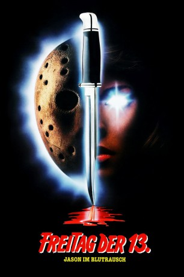

#4088 Freitag, der 13. - Teil 07 - Jason im Blutrausch
Alternativ: Friday the 13th Part VII: The New Blood
 
 IMDB-Wertung: 5.3 / 10
IMDB-Wertung: 5.3 / 10  Metascore: 0
Metascore: 0 
Seit der psychopathische Killer Jason tot an einen Felsen im Crystal-See gekettet wurde, gibt es keine Morde mehr im nahegelegenen Sommercamp. Das ändert sich, als die junge Tina Shepard eintrifft. Das Mädchen ist telekinetisch begabt und kann außerdem in die Zukunft sehen. Ihr Psychiater mißbraucht ihre Fähigkeiten, um seine Karriere zu fördern. Ein Experiment erweckt Teenager-Schlächter Jason zu neuem Leben. Nach mehreren brutalen Morden, die Tina vorhersieht, ohne sie verhindern zu können, besiegt sie den Untoten.
Jahr: 1988
Dauer: 84 Minuten
FSK: 18
Land: USA Studio: Paramount PicturesTonspuren: DD2.0 - ,
Untertitel:
Auflösung: 1080p (1920x1080) Größe: 7905 MB
Genre: Horror
Regisseur: John Carl Buechler
Drehbuch: Srdjan Koljevic
Soundtrack:
Darsteller:
 John Otrin als Mr. John Shepard
John Otrin als Mr. John Shepard- Lar Park-Lincoln als Tina Shepard
 Terry Kiser als Dr. Crews
Terry Kiser als Dr. Crews- Kevin Spirtas als Nick
- Heidi Kozak als Sandra
 Kane Hodder als Jason Voorhees
Kane Hodder als Jason Voorhees- William Butler als Michael
 Craig Thomas als Ben
Craig Thomas als Ben Corey Feldman als Young Tommy Jarvis , archive footage
Corey Feldman als Young Tommy Jarvis , archive footage Thom Mathews als Tommy Jarvis , archive footage
Thom Mathews als Tommy Jarvis , archive footage Kimberly Beck als Tricia Jarvis , archive footage
Kimberly Beck als Tricia Jarvis , archive footage- C.J. Graham als Jason Voorhees, Part VI , archive footage
- Darcy DeMoss als Nikki , archive footage
 Tony Goldwyn als David , archive footage
Tony Goldwyn als David , archive footage- John Carl Buechler als Fireman who picks up Jason's mask , uncredited
- Jennifer Banko als Young Tina Shepard
- Susan Blu als Mrs. Amanda Shepard
- Susan Jennifer Sullivan als Melissa
- Staci Greason als Jane
- Larry Cox als Russell
 Jeff Bennett als Eddie
Jeff Bennett als Eddie- Diana Barrows als Maddy
- Elizabeth Kaitan als Robin
- Jon Renfield als David
- Michael Schroeder als Dan
- Debora Kessler als Judy
- Diane Almeida als Kate
- Delano J. Palughi als Rescue worker
 Ted White als Jason Voorhees, Part IV , archive footage
Ted White als Jason Voorhees, Part IV , archive footage- Nancy McLoughlin als Lizabeth , archive footage
- Mike Nomad als Cop on pier , archive footage
- Lauren-Marie Taylor als Vicky , archive footage
 Walt Gorney als Opening Narrator , uncredited
Walt Gorney als Opening Narrator , uncredited
Datei: X:\FSK18-Collections\Freitag, der 13\Freitag, der 13. - Teil 07 - Jason im Blutrausch (1988, FSK18, 1920x1080).mkv seit 19.07.2016
Festplatte: FSK18
 Es gibt insgesamt 15 Filme in der Gruppe 'FSK18-Collections\Freitag, der 13'
Es gibt insgesamt 15 Filme in der Gruppe 'FSK18-Collections\Freitag, der 13'